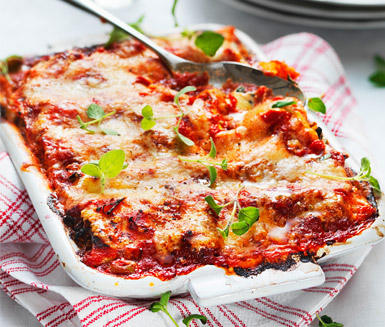
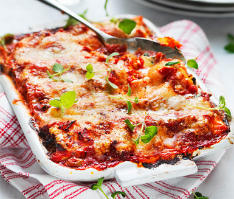

4 portioner
Såhär gör du:
Koka upp vatten till pastan.
Skala och skär löken i stora klyftor. Bryn färs och lök i oljan i en stekpanna. Salta och peppra.
Koka pastan enligt anvisning på förpackningen.
Låt oliverna rinna av.
Rör ner pesto och grädde i pannan. Smaka av med salt och peppar.
Skär tomaterna i bitar. Blanda gärna med en vinägrett.
Servera pastan med köttfärssås, oliver och tomater.
6 portioner
Såhär gör du:
Sätt ugnen på 225 grader.
Skala och finhacka vitlöken. Fräs i 3 msk olja tillsammans med tomatpuré i en gryta. Tillsätt krossad tomat och vatten, låt puttra ihop cirka 5 minuter.
Tina och krama ur vätskan ur spenaten. Blanda spenaten med ricottaost och crème fraiche. Salta och peppra.
Fyll pastaplattorna med ricotta-smet och rulla ihop till rullar.
Häll hälften av tomatsåsen i en långpanna. Lägg rullarna i pannan.
Häll över resten av såsen och toppa med smulad mozzarellaost.
Grädda i mitten av ugnen cirka 20 minuter.